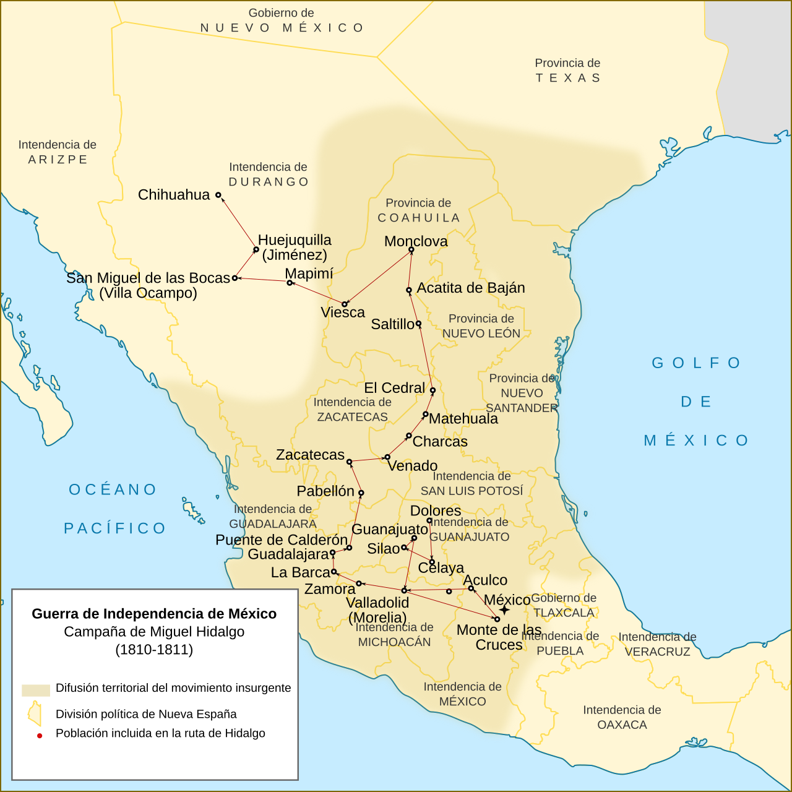

Mapa interactivo
La campaña de
Hidalgo
16 de septiembre de 1810 · 21 de marzo de 1811
Haz clic en cada número para desplegar el conflicto y entrar al episodio correspondiente.

Los puntos funcionan como índice narrativo de la campaña y como acceso directo a cada episodio.
Índice rápido de batallas